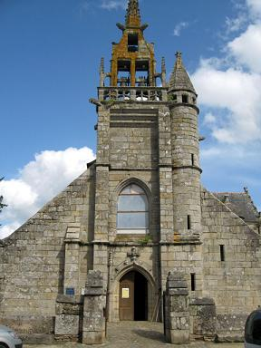
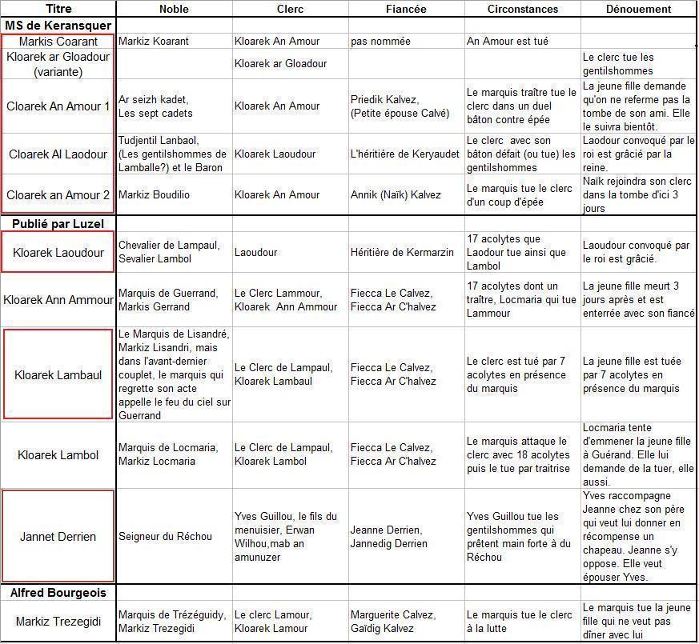

Le Marquis de Guérand
The Marquess of Guérand
Dialecte de Léon
|
. Le "Marquis Coarant" chanté par Marie Koateffer (1752-1842), âgée de 83 ans, de Loqueffret en Haute Cornouaille, en juillet 1835 , selon indication p.45 du 1er cahier de Keransquer. C'est même la plus ancienne date notée dans ce document. C'est à cette même informatrice que l'on doit le chant III de Lez-Breizh , "Le chevalier du Roi". F. Gourvil a retrouvé sa trace: Marie Goadeffen, épouse Tanguy est décédée le 29 avril 1842 à l'âge de 90 ans. . et "le Marquis de Guérand" chanté par Marie Le Bris, épouse Marrec , (1769 - 1847) de Loge Daye en Nizon selon les "Tables A et B" . C'est l'épouse du malheureux Jean Marrec, dont la gwerz "Une bonne leçon" relate la triste fin. La table B lui attribue encore: - Le petit mousse , une version du fameux "petit navire" où le sort tombe sur le capitaine (page 7 du manuscrit de Keransquer); - et "L'Héritière de Kéroulas" que la table A affirme pourtant avoir été chanté par Marie-Jeanne Gamm ("la boiteuse") du Kergoz en Nizon. . "Marquis Coarant" (p. 45), . "Cloarek an Amour" (version 1, Priedik Calvé: pp. 52-54 et version 2, Annaïk Calvé: pp 95-96), ; . "Cloarek al Laoudour" (pp. 82 et 77-80) - Sous forme manuscrite : . par De Penguern t. 92, 18: "Cloarec Lambol" (recueilli par Madame de Saint-Prix); t. 111, 273: "Cloarec Lambol" . par Lédan, II : "Cloarec al Laoudour" (identique à celui du MS de Keransquer et publié par Souvestre dans les "Derniers Bretons", édition 1836, tome II) et . G. Lédan (Bibliothèque de Morlaix): "Cloarec bihan Paul", t. VIII, p.123 - Publié dans des recueils: . par F. Luzel, dans "Gwerzioù 2": "Kloarek Laoudour" (Plouaret, 1844); "Kloarek An Amour (pp. 466-471, Plouaret, 1854); "Kloarek Lambaul" (pp. 472-477, Pluzunet, 1869); "Kloarek Lambol" (pp. 478-483, Plouaret, 1849); "Jannet Derrien" (Plouaret,1849). . Par H. Guillerm "dans ses "Chants...de Cornouaille": "Gwerz ar c'hloarek yaouank" (Plozévet); et dans ses "Mélodies ...de la campagne": "Annaïk Calvé" (Gouézec, 1904). . Par Bourgeois dans "Kanaouennoù Pobl": "Gwerz Markis Trezegidi" (Châteaulin, 1889). - Publié dans des périodiques : . par G. Lejean, "Le marquis de Guérand; Notice sur Plouégat-Guerrand" dans l'"Echo de Morlaix", 1846 (trad. seule). . Par Ollivier dans la "Revue de Bretagne et de Vendée", 1903, 1: "Kloareg ar C'hlaouder (Plouguernével). Egalement dans "les Annales de Bretagne", XLVI, 1939. . Par F. Cadic, dans "La Paroisse bretonne de Paris", nov. 1906: "Markis Milan" (Noyal-Pontivy). . Par G. Milin dans "Gwerin", 1: "Kloarek Lambaul" (Tréguier), ainsi que dans le "Bulletin de la Société académique de Brest", IV, 1864-1865, p. 98-104. . Par le chanoine H. Pérennès: "Kloarek Ar C'hlaouder" dans "Les Annales de Bretagne", volume 46 3-4, pages 271 à 285, en 1939. |
 |
. as "Marquis Coarant", it was sung by Marie Koateffer (1752 -1842), 83 years old in July 1835 , from Loqueffret in Upper Cornouaille, as stated on p.45 of the first Keransquer copybook. This is the earliest date set forth in this document. This informant also provided La Villemarqué with song III of Lez-Breizh, "The King's Knight". F. Gourvil found additional information: Marie Goadeffen, wife of Tanguy died on 29th April 1842, aged 90. . as "Marquis de Guérand", it was sung by Marie Le Bris, wife of Marrec , (1769 - 1847), from Loge Daye near Nizon, according to "Tables A and B" . She is the wife of the unfortunate Jean Marrec whose wretched death is recounted in the gwerz "A good Lesson" . Table B also attributes to Marie Le Bris: - The little ship's boy , a version of a popular shantee in which the captain is chosen by fate to be eaten by the hungry crew (page 7 of Keransquer MS); - and "The heiress of Kéroulas" , a lament which, according to Table A, had been sung by Marie-Jeanne Gamm ("Limping Mary") from Kergoz near Nizon. . "Marquis Coarant" (p. 45), . "Cloarek an Amour" (version 1, Priedik Calvé: pp. 52-54 and version 2, Annaïk Calvé: pp 95-96), . "Cloarek al Laoudour" (pp. 82 et 77-80) - In handwritten form : . by De Penguern t. 92, 18: "Cloarec Lambol" (contributed by Madame de Saint-Prix); t. 111, 273: "Cloarec Lambol" . by Lédan, II : "Cloarec al Laoudour" (identical with the Keransquer MS homonymous song, and published by Souvestre in "The last Bretons", 1836 edition, book II) and . G. Lédan VIII, p.123 (Morlaix town library): "Cloarec bihan Paul" - Published in printed collections: . by Luzel, in his "Gwerzioù 2": "Kloarek Laoudour" (Plouaret, 1844); "Kloarek An Amour (Plouaret, 1854); "Kloarek Lambaul" (Pluzunet, 1869); "Kloarek Lambol" (Plouaret, 1849); "Jannet Derrien" (Plouaret,1849). . by H. Guillerm in his "Chants...de Cornouaille": "Gwerz ar c'hloarek yaouank" (Plozévet); and in his "Mélodies ...de la campagne": "Annaïk Calvé" (Gouézec, 1904). . by Bourgeois in "Kanaouennoù Pobl": "Gwerz Markis Trezegidi" (Châteaulin, 1889). - Published in periodicals : .By G. Lejean, "Le marquis de Guérand; Notice sur Plouégat-Guerrand" in l'"Echo de Morlaix", 1846 (in French translation only). . by Ollivier in "Revue de Bretagne et de Vendée", 1903, 1: "Kloareg ar C'hlaouder (Plouguernével). Also in "Annales de Bretagne" XLVI, 1939. . by F. Cadic, in "La Paroisse bretonne de Paris", nov. 1906: "Markis Milan" (Noyal-Pontivy). . by G. Milin in "Gwerin", 1: "Kloarek Lambaul" (Tréguier), as well as in "Bulletin de la Société académique de Brest", IV, 1864-1865, p. 98-104. . by Canon H. Pérennès: "Kloarek Ar C'hlaouder" in "Les Annales de Bretagne", release 46 3-4, pages 271 to 285, in 1939. |
Ton
(Dans le Barzhaz: même mélodie que Baron Jaouioz )
Ton
("Gwerz Markiz Trezegidi" recueillie par le Colonel Bourgeois à Châteaulin en 1889)
(Fond sonore de la page, arrangement CH. Souchon, 2012)
| Français | English |
|---|---|
|
I
1. A tous, bonjour et joie dans ce logis; Mon Annaik, est-elle ici? 2. - Elle est au lit et dort à poings fermés; Gardez-vous bien de la réveiller! 3. Elle est au lit et dort profondément; Ne l'éveillez pas à présent.- 4. Le clerc de Garlan s'élance aussitôt Vers l'escalier et il monte en haut, 5. Monte lestement l'escalier et puis Va s'asseoir sur le banc du lit. 6. - Il faut se lever, Annaïk Kalvez, A l'Aire-Neuve il nous faut aller! 7. - A l'Aire-Neuve, non, je n'irai point, J'ai peur d'un certain malandrin; 8. Le plus méchant gentilhomme qui soit, Et partout il s'attache à mes pas. 9. Quand il y aurait là-bas cent messieurs, Nous irons danser tout comme eux. 10. - Quand bien même ces messieurs seraient cent, Ils ne te feraient rien, pour autant. 11. A l'Aire-Neuve, Annaïk, nous irons Comme eux nous danserons en rond. - 12. Sa belle robe de laine elle a mis, Et elle a suivi son doux ami. II 13. Or le marquis de Guérand demandait Ce même jour, à l'hôtelier : 14. - Hôtelier, hôtelier, dites, mon cher, N'auriez-vous donc pas vu certain clerc? 15. - Seigneur marquis, vous voudrez m'excusez: Je ne sais à qui vous pensez. 16. - Vous excuser! Ca non, certainement! Je vous parle du clerc de Garlan! 17. - Il est pour la journée parti là-bas, Une jolie fille à son bras; 18. A l'Aire-Neuve, ils sont allés tout droit! Joyeux et gentil couple, ma foi! 19. Sa toque arbore une plume de paon A son col une chaîne pend; 20. Et cette chaîne qui pend à son cou Va sûrement faire des jaloux. 21. Elle porte un petit corset brodé De velours et d'argent orné. 22. Celui qu'à ses noces elle mettra: C'est qu'ils se sont fiancés, je crois. - III 23. Et le marquis de Guérand, hors de lui Sur son cheval rouge bondit, 24. Et le voilà qui se rend aussitôt A l'Aire-Neuve au triple galop. 25. - Ces gages à gagner tombent à point! Clerc, viens donc, mets bas ton pourpoint. 26. Mets bas ton pourpoint, avec toi je veux Donner un croc-en-jambe ou bien deux. 27. - Sauf votre grâce, je n'en ferai rien, Car vous êtes noble, moi point; 28. Vous le fils de Madame de Guérand, Moi le fils d'un simple paysan. 29. - Un paysan moins à plaindre que moi, Et qui des belles as le choix! 30. - Seigneur marquis, soit dit sans vous vexer, Ce choix, ce n'est pas moi qui l'ai fait. 31. Marquis de Guérand, celà saute aux yeux: Elle me fut accordée par Dieu. - 32. Annaïk de tous ses membres tremblait, Les entendant ainsi parler: 33. - Tais-toi, mon ami! Partons! Il est temps; On souffre à fréquenter les méchants. - 34. - Avant de partir, le clerc, réponds-moi: Combats-tu à l'épée parfois? 35. - Jamais je n'ai porté d'épée, ça non, Mais je m'entends à jouer du bâton. 36. - En jouerais-tu contre moi, terrible homme? Voilà qui tombe à point, en somme! 37. - Seigneur gentilhomme, hélas, mon bâton Ne vaut contre votre espadon. 38. Seigneur, je n'en ferai rien, votre épée Pourrait sinon en être souillée. 39. - Si je salis mon épée, promptement Pour la nettoyer j'aurai ton sang! - 40. Annaïk, voyant à flots s'écouler Le sang de son clerc terrassé, 41. Annaïk, en grand émoi, s'élança Et aux cheveux du marquis sauta, 42. Aux cheveux du marquis elle sauta, Par l'Aire-Neuve le traîna. 43. - Mon clerc! Tu l'as tué, traître de marquis, Vas-t-en donc! Vas-t-en donc, loin d'ici! - IV 44. Annaïk à la maison retournait, De larmes ses yeux débordaient. 45. - Ma bonne mère, si vous m'en croyez, Vous me ferez un lit bien douillet; 46. Ma mère vous ferez mon lit bien doux, Mon cœur ne va pas bien du tout. 47. - Ma fille, vous avez bien trop dansé, Et votre cœur en est oppressé. 48. - Non, ma mère, trop dansé je n'ai point: Le marquis est un assassin! 49. Oui, ce traître de marquis de Guérand A tué mon clerc, présentement! 50. Au fossoyeur qui doit l'ensevelir, Dites, lorsque vous le verrez venir: 51. «De terre dans sa fosse ne mets pas, Sous peu ma fille l'y suivra.» 52. N'ayant point dormi dans le même lit, La tombe les a réunis; 53. Plutôt qu'ici-bas, ne vaut-il pas mieux Qu'ils soient unis au ciel devant Dieu?- Traduction Chr. Souchon (c) 2012 |
I
1. Bliss and joy to all! Is my fair Annaïk at home? Is she there? 2. - She is in bed, having a rest: Don't wake her! You stay here at best! 3. Now she is asleep in her bed, Wait till she awakes, as I said.- 4. The clerk of Garlan didn't care, And immediately went upstairs. 5. Quick and briskly upstairs he went, To the closed bed where she was pent. 6. - Get up quickly, Annaïk Calvé, There's a new threshing floor today! 7. -I don't want to go to that fair. For a bad rascal will be there. 8. The worst nobleman that I know; Pesters me wherever I go. 9. - Were there a hundred like that lord, To harm you no one could afford! 10. A hundred of them though there were, We'd go to the threshing floor fair! 11. To the threshing floor we'll go, too, We shall dance, the same as they do!- 12. Now she put on her woolen dress, And went to the feast, nonetheless. II 13. Marquess of Guérand was asking The innkeeper, in the morning: 14. - Pray, innkeeper, would you tell me Where is the clerk whom I don't see? 15. - Excuse me, Lord! Which do you mean? I know of them a least sixteen. 16. - Your insolence I won't endure: The clerk of Garlan, to be sure! 17. - He is on his way down there, With him a girl who's pretty fair. 18. They go to the new threshing floor; A pretty couple, furthermore! 19. A peacock pen is on his hat And round his neck a chain at that; 20. Around his neck he wears this chain And down his breast, to make it plain. 21. A small velvet bodice she wears, Though she does not give herself airs, 22. A wedding bodice. To be brief: They are engaged, to my belief. - III 23. The marquess who was full of wrath On his red horse rode down the path; 24. Now, where did he guide his red horse? To the new threshing floor, of course! 25. - Clerk, quickly, take off your doublet, We will wrestle for the forfeit ! 26. C lerk, quickly your doublet take off, We'll wrestle or at you they'll scoff! 27. - That's a thing I cannot afford: I'm a peasant. You are a lord; 28. To Lady Guérand you are son, I'm a peasant and a poor one. 29. - Although you are but a peasant, You choose the finest girls at present! 30. - Lord Marquess, in this we differ: I was not the one who chose her. 31. Marquess: To me, I must gainsay, God gave her. T'was the other way! - 32. Annaik Calvé began to quake, At this violent outbreak: 33. - Be quiet, my friend and let us go; He will cause us but pain and woe. - 34. - Before you leave, though you're no lord, Do you know how to wield a sword? 35. - Never did I hold a sword, but I can wield a stick. I've got guts! 36. - Now, what about a fight with me? You're said a fearsome man to be! 37. - Lord nobleman, where is the catch? For a sword a stick is no match! 38. I'll do, Lord, nothing of the like, You would spoil your sword at each strike . 39. - If it's spoiled, leave this care to me! A good cleanser your blood will be!- 40. Annaik saw her friend's blood flow, She saw it flow at the first blow. 41. She flew at his throat in a flare Up of wrath, grasped him by the hair, 42. She attacked him like a tiger, Dragged him on the floor all over. 43. - Be off! You have finished your work: You have murdered my darling clerk! - IV 44. Annaik Calvé, now home she roams, With her eyes full of tears she comes. 45. - My dear mother, if you love me, You will prepare my bed quickly; 46. You'll prepare for me a soft bed, My heart is full of pain and dread. 47. - You've been dancing too much, daughter; That's with your heart all the matter. 48. - I did not dance too much, doubtless: My clerk was killed by the marquess! 49. The traitorous Marquess Guérand Has killed my clerk with his own hand! 50. You shall say to the gravedigger, When he comes to take him over: 51. « The grave you'll dig, please, don't fill in, Soon shall my daughter follow him. » 52. Short of sleeping in the same bed, We shall have the same grave, instead. 53. We were not married here below, But before God we shall wed though! - Translated by Ch. Souchon (c) 2012 |
Cliquer ici pour lire les textes bretons (versions imprimée et manuscrite).
For Breton texts (printed and ms), click here.

|
Résumé
Vers 1670 le jeune Marquis de Guérand, seigneur de Locmaria, tue lors d'une aire-neuve , un clerc dont il convoite la fiancée, Annaik Calvez. Une multitude de versions Par crainte d'un seigneur, quatre dames se font accompagner au pardon du Folgoët ou de Saint Anne par Guiilaume Calvet armé de son gourdin. Le seigneur aperçoit depuis le lac du nouveau moulin seigneurial ces quatre femmes qu'il estime placées sous sa "juridiction". Malgré le conseil d'un confident qui connait la réputation martiale de Calvez, il s'approche et lui réclame son "dû": il ne touchera pas à son épouse, s'il lui laisse sa voisine. Ayant essuyé l'inévitable refus, il appelle à la rescousse dix-huit autres gentilhommes. Le penn-bazh a raison des dix-neuf épées nues. Pour rassurer les dames éplorées qui s'inquiètent des suites de ce massacre, Guillaume va trouver le roi qui, incrédule, lui demande de renouveler son exploit contre quarante soldats. Ce qui est aussitôt fait. Le roi remet au champion un sauf-conduit qui lui permet de rentrer au pays sans craindre d'être appréhendé. Le nom du seigneur libertin est donné dans deux de ces versions: "Pan" et "ar Bank". Il ne fait guère de doute qu'il s'agit du même personnage que dans le chant du Barzhaz: le seigneur du Parc de Locmaria, marquis de Guérand. C'est sur ce chant que s'ouvre le premier carnet de Keransquer où il occupe les pages 1 à 4. Il commence par les mots: troch hi vara d hé vugale" ("le vieux Le Gardien disait, en coupant du pain à ses enfants") , une phrase que les admirateurs de Kervarker devraient donc prononcer avec la même déférence que celle qu'on accorde au "Longtemps je me suis couché de bonne heure" de Proust (!). Comme dans les versions "(G)Loadour", c'est le noble, ainsi que ses acolytes, au nombre symbolique de 18, qui est tué. Le coupable est convoqué devant le roi (sans doute un emprunt à la gwerz de La Fontenelle ) et grâcié. La même histoire, donc, sauf que le coupable est une coupable , Anne Le Gardien (est-ce un avatar de "Guérand"?), qui avait caché un redoutable "penn-bazh" (bâton ferré) dans ses vêtements. Pour faire bonne mesure, elle casse le bras de son frère de lait qui n'est autre que le page du dangereux marquis. Du Marquis Coarant au Marquis de Guérand Il est clair que le jeune La Villemarqué disposait d'autres informations. Dès l'édition de 1839, il indique dans l'argument et dans les notes, Du clerc de Garlan au clerc Laudouer Ni Louis-François, ni Charles-Marie-Gabriel Une fois n'est pas coutume: La Villemarqué semble avoir rajeuni les événements auxquels se rapporte cette gwerz, en attribuant au fils, Louis-François du Parc de Locmaria, les méfaits du père, Vincent! C'est ce que l'historien Louis Le Guennec (1878 -1935) a montré, dans un article consacré à "La légende du marquis de Guerrand et la famille Du Parc de Locmaria", paru dans le "Bulletin de la Société archéologique du Finistère", en 1928, p. 15-35. Luzel , au détour d'une note de bas de page, et après avoir suggéré un rapprochement saugrenu entre le Clerc "An Armour" et l'épouse de Robert Burns, Jane Armour, adopte lui aussi cette opinion erronée. A propos du chant qu'il intitule "La Marquise de Guérande" (Markizes Guerrand), il indique (p.489): Or, ce personnage hérita à l'âge de 9 ans de la fortune de son cousin au 6ème degré, le marquis Jean-Marie-François de Locmaria et Guérand, (le vrai fils du danseur), mais n'habita guère ses domaines de Bretagne . Il ne revint au château de Guérand que pour y mourir le 29 décembre 1769. Trois ans plus tard, il entamait une brillante carrière militaire qui lui valut d'être nommé maréchal de France pour la part qu'il avait prise à la victoire de Spire (1703). Ayant quitté le service en 1704, il se maria sur le tard en 1707 et eut un fils, Jean-Marie-François, né en 1708, dont il a déjà été question. Il mourut alors qu'il était aux eaux de Bourbonne en septembre 1709. Il est difficile de voir dans ce brillant et courageux personnage le farouche "Markiz brunn", marquis rouge, qui perpétra nombre de meurtres, rapts et violences et exactions de toute espèce, jusqu'à ce que la mort l'incite à une hâtive conversion. Plusieurs gwerzioù furent composées sur le trépas et le curieux testament du marquis, qui toutes précisent qu'il est mort au château de Guérand , peu de temps après avoir revu sa femme, qu'il avait fait convoquer à Guingamp. Il ne peut donc s'agir de Louis-François, décédé à Bourbonne . Vincent du Parc, premier Marquis de Guérand En revanche, son père, Vincent (1607 - 1669), semble établir de façon incontestable l'identité du défunt. L'hôpital fonctionnait dès 1673 et hébergea douze pauvres jusqu'à la révolution qui le ferma et le vendit. Seul point faible de cette démonstration: les archives criminelles de la juridiction locale (Morlaix-Lanmeur) et les registres des paroisses de la région ne comportent aucune trace de la tragique aire-neuve. Les trois types de gwerzioù Les chants populaires composées sur le "Marquis rouge" tournent autour de trois sujets: |
Résumé
Towards 1670 young Marquess Guérand, Lord of Locmaria, kills on a new threshing floor festival , a clerk whose fiancée, Annaik Calvez, he covets. A multitude of versions As they are afraid of a certain lord, four ladies who start on a pilgrimage to Folgoët or Saint Anne ask Guiilaume Calvet to accompany them armed with his cudgel. The lord who is on the look-out by the weir of the new communal water-mill spies these four women whom he considers as part of his "property". Disregarding the advice of an adherent who is aware of Calvez' martial repute, he comes near and claims his "due": he will spare his wife, if he leaves to him his neighbour's daughter. Since this offer is turned down, as was to be expected, he calls for help on eighteen other noblemen. The "penn-bazh" proves to be superior to the nineteen unsheathed blades. In order to reassure the crying women who worry about the consequences of this slaughter, Guillaume repairs to the king who refuses to believe him, and asks him to reedit his achievement against forty of his soldiers. This happens at once with the same result. The king hands out to the champion a safe-conduct allowing him to return home without being arrested. The name of the lustful lord is given in two of these versions: "Pan" and "ar Bank". There is little doubt that he is the same person as in the "Barzhaz Breizh" song: the Lord du Parc de Locmaria, the marquess of Guérand. With this very song, noted on pages 1 to 4, the first Keransquer copybook begins. The first stanza reads: troch hi vara d hé vugale" ("Old Le Gardien said, As he was cutting a loaf of bread for his children") , a sentence that Kervarker's admirers should utter in the same awed voice, as Proust's fans pronounce the famous "For a long time I would go to bed early" (!). As in the "(G)Loadour" versions, it is the nobleman and his 18 accomplices (a symbolic number) who are killed. The murderer is summoned to appear before the King (an episode very likely borrowed from La Fontenelle ) and is pardoned. The usual story but for the culprit who is a female culprit . Anne Le Gardien (is that name derived from "Guérand"?) had hidden a fearful "penn-bazh" (cudgel with iron tips) in her clothes. For good measure she breaks, in addition, the arm of her foster-brother who happens to be the page of the villain-marquess. Marquess Coarant and Marquess Guérant It is evident that young La Villemarqué availed himself of other sources than those recorded in his MS. In the first edition of the Barzhaz (1839) he states in the "argument" and the "notes" to the ballad: Clerk Garlan and Clerk Laudouer Neither Louis-François nor Charles-Marie-Gabriel Just the once will not hurt! La Villemarqué seems to have made younger than it was actually the story recorded in this gwerz, in ascribing to Louis-François du Parc de Locmaria the malignancy of his father Vincent! That is what the historian Louis Le Guennec (1878 - 1935) clearly showed in an article dedicated to the "Legend of Marquess of Guérand and the family Du Parc de Locmaria", published in the "Bulletin archéologique du Finistère", in 1928, on pages 15 to 35. Luzel , in a foot-note, after he had drawn a preposterous parallel between Clerk An Amour and Robert Burns' wife, Jean Armour, also adopted these erroneous views. Concerning the song titled "The marchioness of Guérande" (Markizes Guerrand), he writes (p.489): Now, the latter inherited, when he was 9 years old, the fortune of his cousin of the sixth degree, Marquis Jean-Marie-François de Locmaria et Guérand, (the true son of the dancer!), but he hardly dwelt in his Brittany estates . He came to Guérand Castle only a fey days before he died, on 29th December 1769. Three years later he began a brilliant military career that earned him the rank of a field marshal, as a reward for the part he took in the victorious battle of Spire (1703). He resigned in 1704, married, in his old days, in 1707 and had a son, Jean-François, born in 1708, already addressed. He died when he was taking the waters at Bourbonne in September 1709. It is difficult to admit that this brilliant and gallant soldier could have been the fierce "Markiz brunn", Red Marquess of the song, who committed so many murders, abductions and violent exactions of all sorts, until nearing death awareness prompted him to a hurried conversion. Several ballads were composed about the death and strange testament of the marquess. All of them assert that he died at Guérand Manor , shortly after he had met again his wife, whom he had turned out of the house and sent to Guingamp. Exit Louis-François who died at Bourbonne ! Vincent du Parc, first Marquess of Guérand Far more plausible is the identification with his father, Vincent (1607 - 1669), Vincent's father, Louis du Parc, had slain, (in duel?), his own brother-in-law. Vincent, born around 1607, was an orphan of father and mother when he was hardly twenty, therefore free of committing the acts of cruelty pointed out by the folk songs. This period very likely did not last for long, since he soon joined the army and his courage made him stand out at the service of the Cardinal de Richelieu. In 1637, Louis XIII established his estate of Guérand as a marquisate. The new marquess married ca 1654 Claude de Névet and presided the nobility at the 1653 session of the Estates of Brittany. should be enough to sweep away the last doubts as to the marquess' identity. The only weak point in this demonstration is that neither the criminal records of the Morlaix-Lanmeur jurisdiction, nor the registers of the local parishes have kept traces of the bloody fray on the new threshing floor. The three kinds of ballads The folk songs about the "Red Marquess" are of three kinds: |
Extraits du Manuscrit de Keransquer
Excerpts from the Keransquer MS
| Français | Français | English | English |
|---|---|---|---|
|
- Faites-moi un lit douillet, mère Car je me sens fort oppressé. Je veux aller à l'aire neuve. Je me sentirai mieux après. - Faites-moi donc plaisir, jeune-homme A l'aire neuve n'allez pas. Là-bas, les nobles de Lamballe Ont comploté votre trépas. - Qu'importe que celà déplaise A cette aire neuve, j'irai. S'il y a des sonneurs, je danse, Sinon c'est moi qui chanterai. Le clerc Le Laoudour s'écrie En arrivant à Keryaudet: - Salut, toute la compagnie L'héritière est-elle ici-près? - Là-bas dedans la chambre blanche, Elle peigne ses cheveux blonds. - Le clerc vous emmène à la danse. L'habit violet mettez-le donc! - En arrivant à l'aire neuve, Le clerc, tout joyeux, claironnait - Sonneurs! Jouez une gavotte: Ma belle et moi, voulons danser. Jouez-nous donc toute une suite Pour que nous dansions. Jouez fort! Et, ce n'est pas mal pour deux pauvres, Je donnerai quatre louis d'or! Les nobles de Lamballe disent - Accompagné de sa promise, A l'aire neuve le clerc vient. - Et les voilà qui le défient A propos de tout et de rien. - Serait-ce, si tu t'enrubannes, Pour rivaliser avec nous? - Ces rubans, Baron, que je sache Ne vous ont rien coûté du tout. - Moi, les pugilats me dégoûtent. Un duel au sabre? Pourquoi non? - Tandis que les autres dégainent, Le clerc agite son bâton. Il eût été bien insensible Alors, celui qui n'eût pleuré Voyant du sang des gentilshommes L'herbe verte qui se teintait. La pauvre héritière sanglote Et personne ne la dorlote Sauf le clerc qui s'y employait: Il n'arrêtait pas de lui dire: - Ma chère, il ne faut pas pleurer! Du calme, il n'y a rien à craindre Tant que l'on voit mon sang couler! Quand viendra la dernière goutte Il sera bien temps de prier. - Et le Clerc Laoudour triomphe En arrivant à Keryaudet. - Tiens, Derrien, voilà votre fille. Elle revient, et grâce à moi, |
En bonne santé, innocente
Autant que lorsqu'on l'enfanta! Mais à Paris, il faut que j'aille. Je suis convoqué par le roi! - Donc à Paris, lorsqu'il arrive Il s'enquiert du royal logis. - Bonjour et joie, dans cette auberge Le palais royal, où est-il? - - Bonjour, à vous, mon roi, ma reine, Je suis jeune, mais me voici. - Clerc Laodour, c'est quelque crime Qui vous a conduit en ces lieux. - J'ai tué les nobles de Lamballe Et c'est un crime assez affreux. J'ai tué dix-huit gentilshommes Et je devrais être pendu, Mais mon bâton qui les assomme Dut parer dix-huit sabres nus! - Prenant la parole, la reine S'oppose à ce qu'il soit châtié. - Descend vite, mon petit page, Me chercher plumes et papier: Que j'écrive en blanc et en rouge, Qu'il pourra se rendre en tous lieux. Et que son bâton l'accompagne Je l'écris en rouge et en bleu. Son bâton pour touiller la soupe, Lui vaille, marié, d'être heureux! Traduction Christian Souchon (c) 2012 (a) Cruel le cœur qui eût été A l'aire neuve et n'eût pleuré De voir cette aire ruisseler Du sang que les nobles versaient Tandis que le Clerc les tuaient. (Elle était reprise par Dieu.) (b) La plus belle de par les rues, Et la plus belle à l'aire neuve: Tablier en toile de Flandre! Seule une dame y peut prétendre. Et les rubans pour le lacer, Une pistole ils ont coûté. Var: Orné de trois rubans d'or fin A une pistole chacun Et pour le lacer, deux rubans Qui coûteraient [bien tout autant]. Ils arrivent à l'aire neuve Et font chacun un tour de danse. - Marquis "kidibol?" Un gars terrifiant, dirait-on. (c) Moi, j'ai ma lame dégainée Qui vaut bien le bâton d'un clerc. (d) Moi, j'ai mon épée longue et mince Pour te découper en rubans. - Moi j'ai mon bâton à deux têtes Il est à vos ordres, Seigneur. Ces mots à peine prononcés Que déjà le clerc accourait. (e) Et de tout notre cœur, dansons, Sur l'aire neuve ils sont entrés Et le marquis de Bodinio Lui dit : - Bonjour , clerc An Amour L'homme à l'épée si redoutable. (f) - Je n'ôterai pas mon pourpoint Ni ne lutterai pour les gages. - Son discours à peine s'achève Que voila que le sol ruisselle... (40.2) Du sang que notre clerc versait Lorsque Bodinio l'assaillait. |
- Make me a soft bed, Mother For my heart does not feel at ease. I'll go to the new threshing floor Feast: I am sure to feel better. - My dear son if you loved me You wouldn't go to the new threshing floor. The Lamballe noblemen will be there Who have decided to kill you. - May it please or not to others I'll go to the new threshing floor. If there are pipers, I shall dance, If there are none, I shall sing. Clerc Loadour did say When he arrived at Keryaudet: - Good day and joy in this house The heiress, where is she? - She is over there in her white room, She is combing out her blonde hair. - Quick, put on your purple dress And go to the dance with the clerk! - The merry clerk did say, When he came to the new threshing floor: - Pipers! Play a "ball": So that my girl and I may dance. Quick, play for us a set of dances My girl and I will tread on the floor! And I shall give you four louis d'or, Not bad, since we're but two poor devils! - The Lamballe nobles did say - The clerk has come to the new threshing floor, And with him is his girl. - The Lamballe nobles did say To clerk Al Loadour on that day. - Are you all wrapped up in ribbons, Maybe to be abreast of us? - My Lord Baron, with your leave, Your purse was closed, when I paid for them. - We are not going to wrestle, But to wield my sword would please me- The others had unsheathed their swords, And the clerk had but his cudgel. Cruel-hearted had been whoever Had been there and would not have cried, On seeing the green gras turn red With the noblemen's blood flowing. The heiress of Keryaudet wined And no one thought of cheering her up Except the clerk. The clerk he did: The clerk, he would repeat to her: - Be silent, heiress, do not cry! Be silent, heiress, As long as you see my blood run! Only when the last drop was spilt Will there have come a time to pray. - Now the clerk Laodour did say On arriving at Keryaudet. - Old Derrien, here is your daughter. She is coming back thanks to me, |
Safe and sound and unharmed
As she was when she was born. I'm leaving now for Paris: The king summoned me to his palace. - Good day and joy in this house! The king's palace? Where is it? - Good day, King... I am quite young, but I came though. - Clerk Laodour, tell me, You must have done something wrong. - Wrong enough I have done: I have killed noblemen from Lamballe. Eighteen of them I have killed, Which is enough to be hanged. But they attacked me with their swords While I had but my "penn-bazh" (cudgel). But the queen did not ask That the clerk be punished. - My little page, run downstairs Quickly, fetch me my writing things! That I write in red and in white That he may go wherever he wants. That I write in red and in blue That he may carry a cudgel. And when he is back in his shire That his potstick earned him a wife. (a) Cruel the heart who had not cried At this new threshing floor party Seeing the floor overflowing With the blood that the nobles spilt And yet the clerk did overcome. (God had set her apart for him) (b) She is fairest on the pavement, Fairest at the new threshing floor: With her apron of Holland cloth! Does not look like a farmer girl. The ribbons to lace up the bodice, Cost a pistole at the least. Var: Adorned with three fine gold ribbons That cost a pistole, I guess And to lace it up two ribbons That cost [as much for sure]. They come to the new threshing floor And both of them, they danced a round. - Marquess "kidibol?" You're a terrifying man ... (c) I have an unsheathed sword To oppose the clerk with his cudgel. (d) I have a sword. It's long and thin It shall chop you and your ribbons. - And I have my two-headed stick My Lord, it's ready to serve you. These words were hardly pronounced That the clerk made a rush on him. (e) And we shall dance all the better. - Now they entered the threshing floor And encountered Marquess Bodinio Who said : - Good day , clerk An Amour The man with the terrible sword. (f) - I won't take off my jerkin I shan't wrestle for the forfeit. - He has hardly said these words When the soil was overflowing... (40.2) With the blood that the clerk did shed When Bodinio attacked him. |
.

Cliquer sur les encadrés rouges pour afficher les chants.
Click on red boxes to display song pages.